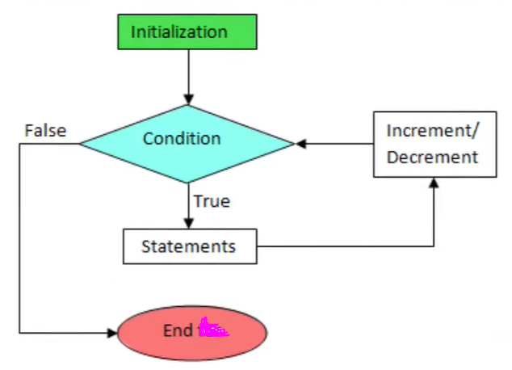

What is a Loop?
A loop in C is a control structure that allows us to repeat a block of code multiple times without writing it again and again.
Purposes of Loop
- To reduce repetition in code.
- To make programs shorter, cleaner, and easier to maintain.
- To perform tasks multiple times like printing, adding numbers, processing arrays, etc.
- To save time and effort for both programmer and computer.
For Loop in C
Syntax:
for(initialization; condition; increment/decrement) {
// statements to repeat
}
Flowchart of For Loop
Working of For Loop
- The loop initializes a variable (like i=1).
- It checks the condition (e.g., i <= 10).
- If true → executes the block.
- After block → updates the variable (e.g., i++).
- Goes back to condition check.
- Repeats until condition becomes false.
Examples
Example 1 – Print “I love Pakistan” 10 times
#include <stdio.h>
int main() {
int i;
for(i = 1; i <= 10; i++) {
printf("I love Pakistan\n");
}
return 0;
}
Output:
I love Pakistan I love Pakistan I love Pakistan ... (total 10 times)
Example 2 – Print “I am a Programmer” 20 times
#include <stdio.h>
int main() {
int i;
for(i = 1; i <= 20; i++) {
printf("I am a Programmer\n");
}
return 0;
}
Output:
I am a Programmer I am a Programmer ... (total 20 times)
MCQs on Loops in C
-
What is the main purpose of using a loop in C?
A) To make the program slower
B) To avoid repeating code again and again
C) To create errors in the program
D) To replace functionsAnswer: B) To avoid repeating code again and again
-
Which of the following is the correct syntax of a for loop in C?
A) for(condition; initialization; update)
B) for(initialization; condition; update)
C) for(update; condition; initialization)
D) for(initialization; update; condition)Answer: B) for(initialization; condition; update
-
In a for loop, which part is executed first?
A) Condition
B) Initialization
C) Update
D) Body of the loopAnswer: B) Initialization
-
What will the following code print?
for(int i = 1; i <= 5; i++) { printf("Hello\n"); }A) Prints "Hello" 1 time
B) Prints "Hello" 5 times
C) Prints "Hello" infinitely
D) Error in codeAnswer: B) Prints "Hello" 5 times
-
What is the output of this code?
for(int i = 1; i <= 3; i++) { printf("%d ", i); }A) 1 2 3
B) 0 1 2
C) 1 2 3 4
D) Infinite LoopAnswer: A) 1 2 3
-
In a for loop, the update step is executed:
A) Before initialization
B) After the loop body executes
C) Before checking condition
D) NeverAnswer: B) After the loop body executes
-
Which loop guarantees at least one execution of the body, even if the condition is false?
A) for loop
B) while loop
C) do-while loop
D) nested loopAnswer: C) do-while loop
-
If the condition in a for loop is always true, what will happen?
A) Program will stop immediately
B) Program will run infinitely
C) Program will run once
D) Error will occurAnswer: B) Program will run infinitely